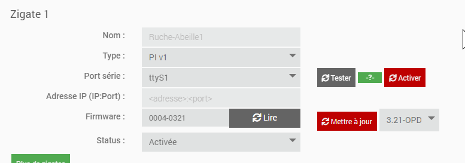
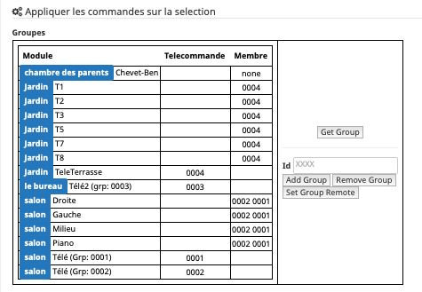

Utilisation¶
La page de configuration d’Abeille¶
Dépendances¶
2 éléments sont potentiellement requis en fonction du type de zigate que vous utilisez:
le package WiringPI est requis si une des zigates est du type « PI »
le package “socat” est requis si une des zigates du type « WIFI »

Configuration de la zigate¶
L’exemple ci apres montre la configuration d’une zigate du type « PI », connectée sur le port « ttyS1 » et activée.
Les éléments a remplir sont les suivants
Le type de zigate: « PI », « USB », « DIN » ou « WIFI » et la version correspondante
Si type USB/PI ou DIN, le port utilisé
Si type WIFI, l’adresse IP et le port de la zigate
Une fois ces éléments connus, il est possible de faire un test de communication (sauf version WIFI pour l’instant) via le bouton « Tester ». Si le test est bon, « OK » en vert apparaitra. Sinon le log « AbeilleConfig.log » doit donner + de précisions quant au problème rencontré.

Une fois le test OK, il ne vous reste qu’a activer la zigate, sauvegarder, et redémarrer Abeille

puis

et enfin

Groupes¶
Les équipements peuvent être adressés de deux façons:
Directement via leur adresse Zigbee courte qui leur est attribuée lors de l’inclusion
Ou via une adresse de « groupe » permettant de joindre un ensembles d’équipements en même temps
Les adresses de groupe sont typiquement utilisées pas les télécommandes Zigbee: Hue, Ikea,…
L’intérêt est qu’un seul message sera envoyé sur le réseau Zigbee, répété par tous les routeurs et tous les équipements ayant cette adresse de groupe réagiront donnant une impression d’exécution simultanée.
Note
Astuce: Ça peut aussi vous sortir d’une situation ou la couverture radio n’est pas bonne et ou vous avez du mal à joindre un équipement. Si vous l’adressez avec son adresse courte, le message doit être routé jusqu’à sa destination par une route spécifique qui peut être interrompu par une muvaise liaison radio. Si vous l’adressez avec une adresse de groupe, le message va être répété par tous les routeurs et vous augmentez la chance que l’équipement reçoive l’information.
Vous pouvez aussi utiliser un scénario dans Jeedom pour adresser un groupe d’équipements, en envoyant à chacun d’eux une commande. Cette solution ne permet pas d’avoir l’impression d’instantanéité mais est très flexible si vous avez un mix de produit zwave et Zigbee par exemple.
Video¶
Gestion des groupes¶
La gestion des groupes se fait de deux façons
Note
L option A n’est pas très user friendly et est l’héritage des premieres versions d’Abeille. Je l a garde car elle me permet de faire des tests, et comme j’oubli, je reli ma doc de temps en temps pour savoir comment faire. Utilisez Option B.
Option A:
Soit depuis la ruche avec 3 commandes (Version initiale pour les développeurs):
Ajout
Retrait
Consultation
Option B:
Soit en utilisant la page de configuration du plug in (pour tous les utilisateurs):
Je vous recommande grandement l’option B.
A chaque fois que vous faites un ajout ou retrait, faites une Consultation/Get Group pour mettre à jour les objets Abeille.
Un équipement peut avoir plusieurs adresses de groupes, cela lui permet par de répondre à plusieurs télécommandes. Par exemple, un va et vient à deux, trois, quarts télécommandes,…
Ajout d un groupe à un équipement¶
Option A:
Premier champ: adresse de l’équipement
Deuxième champ: End Point de l’équipement
Troisième champ: l’adresse de groupe a ajouter
Option B:
Sélectionnez la ou les ampoules qui doivent faire partie du groupe (petite case au dessus à gauche des icones):

Faites un « Get Group » pour récupérer les groupes de cette/ces ampoule(s).

Sélectionnez de nouveau l ampoule et saisissez l’identifiant de groupe que vous voulez lui attribuer dans le champ Id, puis utiliser le bouton « Add Group ». Voila l “ampoule doit avoir son groupe de défini.
Maintenant si vous voulez piloter le groupe avec une télécommande Ikea, sélectionner la télécommande, mettez l’identifiant (Hexa à 4 digit) dans le champ Id, utilisez le bouton « Set Group Remote », et immédiatement réveillez la télécommande en appuyant sur un des boutons physique de celle ci. Il est possible que cela ne fonctionne pas du premier coup alors faites le une ou deux fois de plus. Jusqu’a ce qque vous ampoules réagissent à un appui sur la bouton physique de la télécommande. Maintenant il vous reste à renseigné dans l objet Télécommande l’Id du groupe dans ses paramètres pour qu’Abeille pilote le groupe.

Retrait d un groupe à un équipement¶
Option A:
Premier champ: adresse de l’équipement
Deuxième champ: End Point de l’équipement
Troisième champ: l’adresse de groupe a retirer
Option B:
Sélectionnez la ou les ampoules qui doivent faire partie du groupe (petite case au dessus à gauche des icônes), saisissez l’Id et utilisez les bouton « Remove Group ».
Récupérer les groupes d’un équipement¶
Option A:
Premier champ: adresse de l’équipement
Deuxième champ: End Point de l’équipement
L’information groupe doit remonter dans le champ groupe de l’équipement (peut être invisible par défaut, le rendre visible).
Option B:
Sélectionnez l’équipement et utilisez le bouton »Get Group ».
Commande des Groupes¶
Une fois que les groupes sont en place, il faut les commander. Pour cela vous pouvez par exemple utiliser les Télécommande Ronde 5 boutons de chez Ikea ou simuler une télécommande ronde Ikea avec Jeedom: telecommandeRonde5BoutonsSimulation.
Mise-à-jour « Over The Air »¶
Certains équipements supportent la mise-à-jour de leur firmware à travers le réseau (Over The Air).
Abeille permet d’effectuer cette mise-à-jour dés lors que vous avez récupéré le bon firmware auprès du fabricant.
Via la page des équipements (Plugins > Protocole domotique > Abeille)
En cliquant sur le bouton ci-dessus, l’assistant de mise-à-jour apparait comme l’exemple suivant:

Le bouton AJOUTER permet de charger un firmware sur la boxe Zigbee.
Les formats supportés sont « .ota » ou « .ota.signed ».
A partir du moment ou un firmware est disponible, vous pouvez notifier l’équipement correspondant pour lui demander de lancer la mise-à-jour. N’oubliez pas que si cet équipement est sur batteries, il faut le reveiller tout de suite apres l’applui sur le bouton « NOTIFIER.
Pour les curieux, le sequencement des étapes de mise-à-jour est le suivant:
Optionnel: L’équipement peut être “notifié” qu’un firmware est disponible pour lui
L’équipement demande si un FW est disponible
La zigate répond oui « il y en a un, telle version », ou « non »
L’équipement demande l’envoi du firmware par petits « blocks »
Le plugin renvoi les bouts de demandés. Cette étape peut prendre un long moment (autour d’1H pour un firmware Ikea par ex)
Une fois le transfert terminé, l’équipement vérifie l’integrité et fait sa mise à jour si tout est monde ou remonte une erreur
Inclusion¶
La première étape pour pouvoir utiliser un équipement est de l” Inclusion dans le réseau zigbee géré par la zigate. Il n’existe pas de méthode universelle car chaque fabriquant est libre de procéder de la façon qu’il souhaite. Le grand principe est de mettre la zigate en mode Inclusion et de faire des manipulations sur l’équipement pour qu’il s” Inclusion et rejoigne le réseau.
Suppression¶
Vous avez la possibilité de faire une Suppression d’un équipement du réseau zigbee géré par la zigate.
Santé¶
Le réseau est constitué de nombreux équipements qui vivent au rythme et aléa du réseau radio, des coupures de courant, etc. Afin de monitorer le réseau Abeille propose plusieurs outils: Santé
Tuto¶
Dans la mesure ou Abeille à pour objectif d’exploité le réseau, je vous propose quelques Tuto permettant de mettre en application et répondre à vos besoins.
Trucs et Astuces¶
D’autres fonctions de Jeedom sont bien pratiques, par exemple si vous devez Fonctions Jeedom remplacer des équipements par d’autres, ou Fonctions Jeedom des commandes par d’autres.